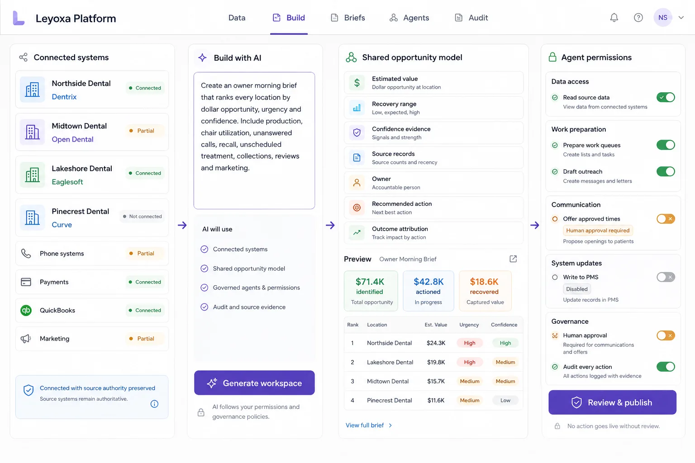

Product direction · Where Acquisition Review can go after close
From inherited records to one operating context.
The current offer is Acquisition Review. This page shows the longer-term direction: use the trusted post-close data foundation to build shared workspaces and governed workflows above a mixed dental stack.
Status: the interfaces below are concept designs using fictional data. They are not the current acquisition deliverable or customer results.
One operating layer above a mixed dental stack.
Map only the fields the group needs, keep every source authoritative, prompt the operating view, and decide exactly what people and agents are allowed to do.

Connect mixed systemsPreserve source authorityPrompt the operating viewSet agent permissionsReview and publish
AI builds the structure. Agents do bounded work.
A user can start with a sentence, inspect the generated workflow, configure exceptions, and require a person before any agent is activated.

BuildPrompt dashboards and workflows
Describe the outcome instead of commissioning a separate application for each view.
GovernKeep permissions visible
Every generated component inherits purpose, source, role, location, and field boundaries.
ActActivate agents with limits
Agents can verify, assign, prepare reports, or escalate; consequential actions remain reviewable and auditable.
Start with the owner brief. Build role-specific views from the same model.
The owner sees ranked opportunity and verified recovery. Regional leaders see location exceptions. Coordinators see action queues. Each view inherits the same source evidence, dollar logic, permissions, and audit trail.

What must be true before Leyoxa proceeds.
The system list is not a capability claim. Delivery depends on permitted access, sufficient historical depth, documentation quality, and an agreed reporting boundary.
AccessUsable read path
Direct, exported, vendor-approved, or third-party access must be confirmed per PMS.
QualityReconcileable records
A bounded sample must show that notes and linked records contain enough information to support the agreed categories.
ResponsibilityCounsel-defined protocol
Known record states, limitations, and post-close ownership are documented before production access.
Start with a real growth decision.
Market intelligence and bounded target diligence establish the evidence, access, provenance, and responsibility model before a broader operating layer.
Review an opportunity